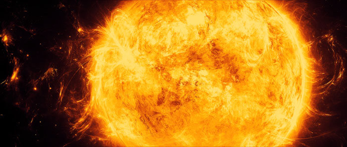

Le soleil
Le Soleil est une étoile d'un diamètre de 1 392 000 km, composée d'un noyau, d'une zone de radiation, d'une zone de convection et de deux couches superficielles : photosphère et chromosphère. Il tire son énergie de réactions nucléaires - transformation d'hydrogène en hélium - qui se produisent en son centre où la température atteint 15 millions °C.
Ces réactions nucléaires sont limitées au noyau, la température des couches suivantes n'étant plus aussi élevée. L'énergie est tout d'abord transportée par radiation dans une première couche, puis par de gigantesques cellules de convection jusqu'à la photosphère, enveloppe de gaz incandescents formant la surface du Soleil. La température est alors de 6000 °K. L'affleurement au niveau de la photosphère d'une multitude de cellules de convection lui donne un aspect
granuleux, visible de la Terre.
Les jets de gaz incandescents qui jaillissent de la photosphère se dispersent dans la chromosphère, puis dans la couronne qui l'entoure.

Source : DeviantART
Taches solaires
Ce sont des taches sombres apparaissant, par groupes de deux ou plus, dans des zones d'intense activité magnétique. Les taches d'une même paire ont des polarités opposées et sont reliées entre elles par un champ magnétique semblable à celui d'un aimant. Elles paraissent sombres, parce que moins chaudes que la photosphère environnante. La température atteint 4 000 °C au centre d'une tache, 5 600 °C sur sa périphérie.
Les taches solaires semblent se déplacer à la surface du Soleil, mais il n'en est rien : elles ne font que suivre son mouvement de rotation. On pense qu'elles résultent de la "dissolution" du champ magnétique du Soleil, du fait de sa rotation différentielle. Les taches solaires commencent par apparaître à des latitudes de 30-40 °N et S avant de migrer lentement vers l'équateur, cette migration étant accompagnée d'un déclin d'activité. Les anciennes taches sont encore
visibles au niveau de l'équateur, lorsque les taches du nouveau cycle apparaissent à des latitudes plus élevées.
Les éruptions solaires
Les éruptions solaires sont de brutales libérations d'énergie dans les régions actives, en général au sein de groupes de taches. Elles durent quelques minutes à plusieurs heures, le plus souvent une vingtaine de minutes. Leur fréquence est fonction du cycle d'activité solaire. Comme les taches et les protubérances, elles sont plus nombreuses en période de maximum d'activité qu'en période calme. Les rayonnements alors émis couvrent toute la gamme du spectre - des rayons
gamma aux ondes radio, en passant par les rayons X durs.
Le Soleil éjecte en même temps dans l'espace un flux de photons et d'électrons. Ceux-ci, lorsqu'ils atteignent la Terre, provoquent de spectaculaires aurores boréales et déclenchent des orages magnétiques qui perturbent les communications radio.
Les éruptions solaires sont rarement observables en lumière blanche. Il est nécessaire d'utiliser un filtre ne laissant passer que la raie rouge du spectre, celle émise par l'hydrogène.
Plan du site | Contact | Site réalisé par Mathieu Morainville.